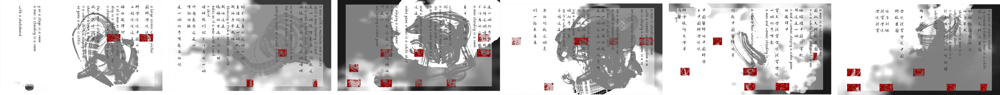
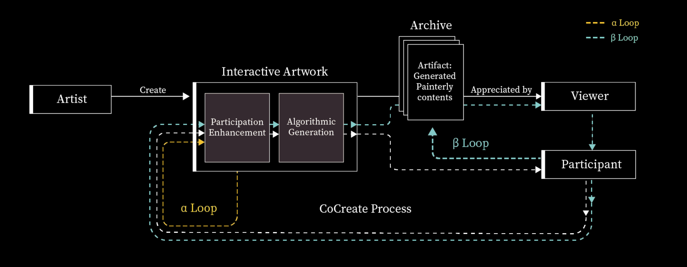
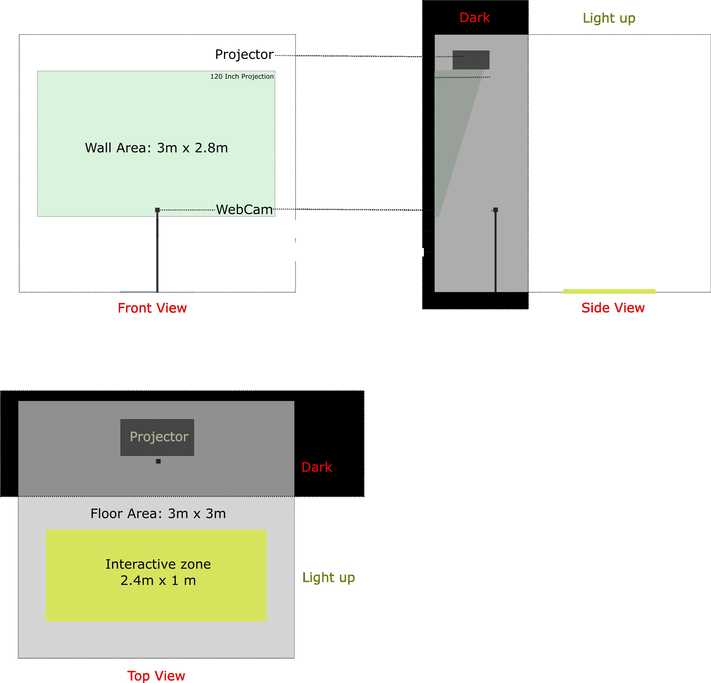

Wushu
2023
This interactive artwork, Wushu, 2023, is an endless collaborative book that intends to encourage and archive active participation in Calligraphy while extending its scope as an art form.

• Caption: Cyclical process within this infinite “book.” Ars Electronica Festival 2023.
This piece engages the audience in generating ink strokes and effects from their motion input. Two customized neural networks generate bilingual inscrutable characters from the audience’s engagements through a “Motion Caption” process. Procedural algorithms derived from calligraphy research and “Four Principles” manipulate the generated characters and their layout compositions, responding to the motion data, and automatically “write” them in the Chinese calligraphy genre. This offers the audience an accessible method to interact with the calligraphy, regardless of their previous knowledge of this oriental art.


• Caption: Participant-generated calligraphy works.
Wushu accumulates participant-generated calligraphy works and serves as a compendium and digital archive that keeps expanding with the audience’s collective participation. The process of creating (“writing”) and appreciating (“reading”) Calligraphy becomes a cyclical process within this infinite “book.” Wushu seeks to stimulate further attention and discussions concerning the visual forms, linguistic meanings, and cultural essence of Chinese characters and Calligraphy.
Archive Body Movements (Context)
Behavioral studies rooted in sociology and anthropology have long been interested in human body movement and its meaning. Anthropologist Birdwhistell, who introduced the term "kinesics" in the 1950s, posited that all body movements carry meaning, and this nonverbal behavior can be analyzed like spoken language, varying across cultures. Performing arts professionals, such as choreographers and dancers, have extensively explored how to visualize and document body movements since the 18th century. Visual artists are intrigued by interpreting and representing human movement in various art forms. In oriental art and tradition, body movement plays a role in calligraphy's origin, development, and modern evolution.
Creating calligraphy involves "movements in the air" and the "interaction between brush and canvas." The initial body movements generate the dynamics and forces that propel the brush with ink, commencing the creative journey. The brush and canvas's contact, guided by the driving force and body movement, produces strokes and ink effects. These two actions reciprocate as cause and effect during the writing process. Calligraphy emphasizes utilizing the body's energy to achieve the body's and mind's artistic unity. The body movements give birth to calligraphy, while the calligraphy and strokes on the canvas visually document the body movement through their principles. Experts can discern the "interaction between brush and canvas" by observing the stroke shapes, spaces between them, and ink effects, but not the "movements in the air" that generate them.

• Caption: Participant-generated calligraphy works.
This work explores applying calligraphy and its principles to represent and archive body movements. To accomplish this, we experiment with this interactive artwork called Wushu, an infinite and collectively-written "book." It first encourages audience engagement through interactive calligraphic visuals, featuring interactive ink and stroke effects. It then translates participants' active involvement and body movements into Chinese characters using multiple neural networks and transforms them into calligraphic characters and layouts. Wushu also accumulates participants' generated calligraphy, presenting it as a compendium and digital archive that expands with the collective participation of the audience.
Regarding archiving body movements, Wushu encourages the audience to become co-creators of the "Book" containing collective calligraphic works and an archive of body movements. It establishes a new calligraphy creation process accessible to individuals regardless of their prior knowledge of the traditional art form. Wushu serves as a virtual platform for reviewing and appreciating audience-generated works, with the audience assuming the roles of both writers and readers within the context of the "Book." The process of creating ("Writing") and appreciating ("Reading") the generated calligraphy becomes a cyclical process within this infinite "Book." Wushu can stimulate further attention and discussions about Chinese characters and calligraphy, including their visual forms, linguistic meanings, and cultural significance.
Co-Creation Process
By combining the concepts of Interactive Art and Generative Art, this artwork examines a new perspective on the typical process of creating and appreciating painterly content (e.g., a painter creates an artwork that is later appreciated by the audience). In Interactive Art, the Audience can be more than a Viewer; they can also be a Participant who engages with the interactive artwork. When the interactive artwork incorporates algorithmic generative capability as part of the interactive system, especially those algorithms that generate painterly content conditioned on the participant’s real-time inputs, the participant co-creates the artifact (generated painterly content) with the interactive artwork.

Within this paradigm, we distinguish the difference between the Participant and the Viewer among the Audience; the Participants gain interactive experiences by engaging with the interactive artwork and become the participant-creator (differs from artist-creator) in the co-creation process, while the Viewers do not. During this process, we focus on the mechanisms and design that enhance their participation, ideally in a feedback loop of engagement. Furthermore, we emphasize that the roles of the Participant and the Viewer should be carefully considered individually; meanwhile, they are interchangeable, and the transformation and transition between them can be a cyclic process further to improve the Audience’s experience with the artwork.
Technical Rider

This interactive installation utilizes a live camera input and projects its output content in real time. A white-colored wall (or projection screen) in a dark environment is required for projection, while the interactive area must be well-lit to capture the audience. The audience's background must remain as clutter-free and undisturbed as possible, without any elements that could interfere with the capturing process. For example, the background cannot be a corridor that people constantly walk by.
Equipment list:
- Electricity and Power Supply: 500W, 2 outlet;
- Base or table: One pedestal 60 cm (height) X 80 x 40 cm
- 4K Projector + MSI Titan GT77HX laptop (RTX4090);